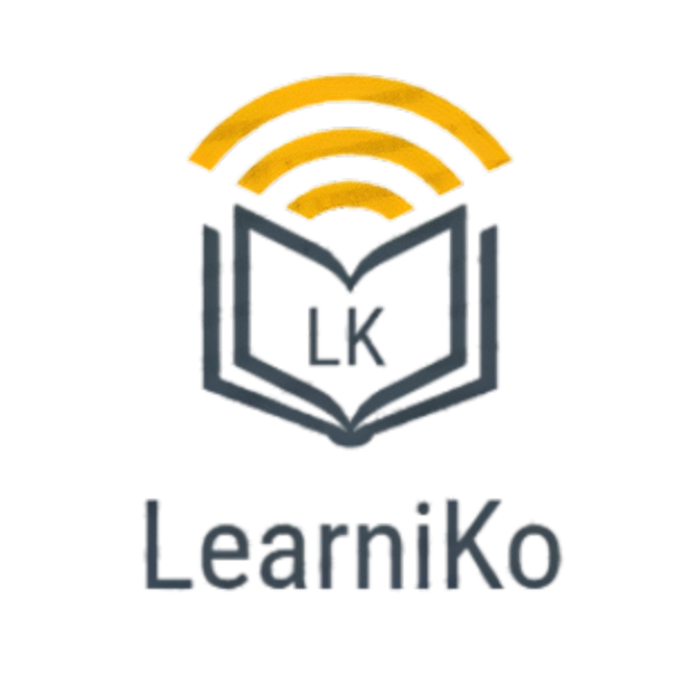

Про нас
LearniKo – освітній веб-портал для тих, хто прагне розвивати свої знання у програмуванні.
Це ресурс, де можна ознайомитися з різними аспектами програмування, дізнатися більше про різні мови та підходи, а також заглибитися у загальні принципи створення програм. Ми стараємося подати матеріал у зрозумілій формі, дозволяючи поступово вивчати нові теми і розширювати власний кругозір у цій галузі.